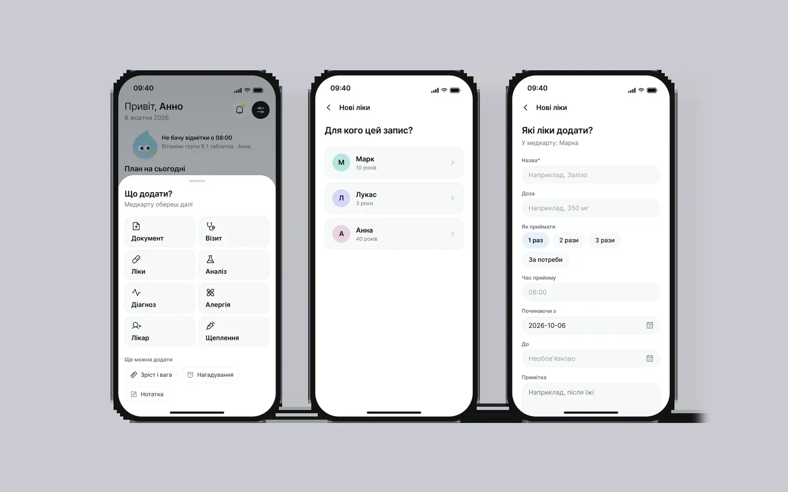
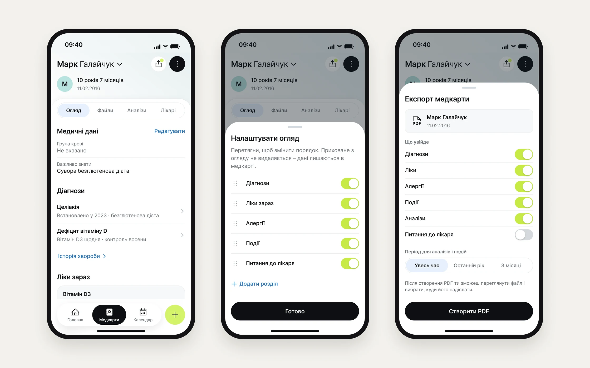
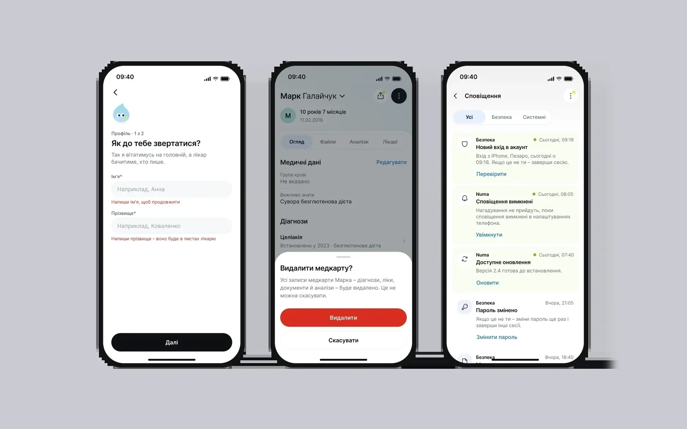

Ogni giorno una mamma deve tenere a mente farmaci e visite di più figli – e dal medico trovare in un minuto l’esame giusto e consegnarlo.
L’obiettivo: un’unica app in cui il piano giornaliero e la storia clinica convivono senza mescolarsi. I vincoli: lavoro da sola, senza un cliente, e i dati sono sanitari e riguardano bambini.
Cosa hanno mostrato il sondaggio e i test
Problema principale – conservare e ritrovare facilmente i documenti sanitari
Il 73% conserva ancora tessere e certificati cartaceiVogliono condividere i dati sanitari
→ decisione 04: una cartella per il medicoVogliono conservare i dati dei familiari
32% – proprio i profili dei figli → decisione 02: «Per chi»Non tengono i documenti in digitale, ma inizierebbero se fosse comodo e sicuro
→ decisione 03: accesso senza password e consenso come passaggio a séIl 65% non aveva mai usato app mediche, quindi la semplicità conta quanto le funzioni: l'ha scelta il 68%, la sicurezza il 57%.
Un sondaggio su 37 persone ha mostrato cosa conservare e cosa mancava, 6 interviste in profondità mi hanno dato personas e una CJM, e i test di usabilità della prima versione con cinque partecipanti hanno mostrato dove le persone si bloccavano. La maggior parte si è orientata nella navigazione senza aiuto – andavano cambiati l'accesso, la creazione della scheda sanitaria e il tono.
Le ipotesi che hanno cambiato il design
| № | Ipotesi | Risultato | Cosa ha cambiato |
|---|---|---|---|
| 1 | Le persone vogliono conservare i dati sanitari in digitale per non perdere i documenti cartacei | Confermata La maggior parte conserva i documenti su carta, spesso li perde e vuole un formato digitale | Schede e documenti sono il cuore dell’MVP → decisione 04: la scheda si può dare al medico |
| 2 | Per le persone contano i promemoria per farmaci e visite | Confermata La maggior parte dimentica i farmaci e vuole promemoria automatici | → decisione 01: il piano del giorno in Home, ciò che è saltato è evidenziato |
| 4 | Gli utenti attivi vogliono l’integrazione con Google Health e Apple Health | Confermata Se lo aspetta chi usa attivamente i tracker | Igor non è la persona principale, quindi le integrazioni sono dopo l’MVP |
| 8 | La maggior parte non si fida di conservare i dati sanitari in digitale | Non confermata La maggior parte è pronta a conservare i dati in digitale se la sicurezza è garantita | → decisione 03: consenso e conferma 18+ in un passaggio separato |
Altre ipotesi
| 3 | Le mamme hanno bisogno di un modo comodo per conservare lo storico delle vaccinazioni | Confermata Le mamme hanno detto di perdere spesso i registri delle vaccinazioni |
| 5 | Per le persone è importante ricevere velocemente i risultati delle analisi in digitale | Confermata La maggior parte vuole ricevere i risultati online |
| 6 | Le persone pagherebbero per funzioni premium se semplificano le cose | Non confermata La maggior parte non è pronta a pagare e si aspetta funzioni gratuite |
| 7 | Il modo di gestire la salute dipende da stile di vita ed età | In parte Alcuni conservano più spesso i dati sanitari, altri usano di più le app di fitness |
Personas e CJM
Dalle interviste sono nate due personas, ognuna con una CJM dal bisogno al risultato. Anna è quella principale: l’MVP è costruito attorno a lei. I bisogni di Igor – integrazione con Apple Health e analisi – li ho spostati a dopo l’MVP.
Anna, 26 anni – mamma di due figli
- Obiettivi
- Tutte le cartelle dei figli in un unico posto, promemoria per vaccini e farmaci, meno tempo per cercare i documenti
- Problemi dalla CJM
- Cartelle caotiche e impossibilità di trovare in fretta ciò che serve, rischio di perdere eventi importanti, molti dati da inserire alla registrazione ed errori, paura di perdere i dati
Igor, 37 anni – lavora nell’IT, utente attivo
- Obiettivi
- Un unico posto per tutti i dati, integrazione con Google Health e Apple Health, promemoria automatici per le analisi
- Problemi dalla CJM
- Dati sparsi, inserimento manuale dei parametri, integrazione e sincronizzazione complicate, nessuna analisi – solo un elenco di record
Cosa hanno mostrato i test con gli utenti · 5 partecipanti
A sinistra – cosa hanno trovato i test della prima versione, a destra – come lo fa Numa ora
Una password sbagliata faceva parte dello scenario: il recupero è andato liscio, ma le persone cercavano l’accesso con Google e alcune volevano subito reimpostare la password
Niente password: Apple, Google o un codice via email
Cercavano «crea» in alto o in «Le mie schede» e non notavano subito il «+» in basso
La prima scheda si crea nell’onboarding, «Aggiungi scheda» è proprio nella fila delle schede
L’opzione «Nessuno» era facile da saltare e da fraintendere
Per iniziare bastano nome, data di nascita e sesso, un campo vuoto dice «Non indicato»
Hanno proposto loro stessi un personaggio aiutante e un tono più caldo, alcuni avevano paura di «rompere» il prototipo
La Goccia racconta lo stato della giornata e suggerisce il passo successivo
Tre tab per l'uso quotidiano – Home, Schede, Calendario – e un solo «+» per qualsiasi voce. L'MVP comprende le schede sanitarie, il piano del giorno, i documenti e la lettera al medico. L'accesso condiviso e Numa AI sono rimandati di proposito.

La Home mostra la giornata, non un menu
- Perché
- Lo scenario centrale emerso dalle interviste: ogni giorno una mamma gestisce i farmaci di più figli, i propri promemoria e gli appuntamenti. Nei test della prima versione i partecipanti hanno chiesto un personaggio che li accompagnasse e un tono più caldo.
- Cosa ho fatto
- Un piano su una timeline della giornata con un indicatore «adesso»; le voci saltate sono evidenziate. Le attività senza orario finiscono in un blocco a parte, «Da tenere d'occhio».
- Risultato
- Ora una mascotte a forma di goccia racconta lo stato della giornata: «Non vedo il check-in delle 08:00». La Home risponde a «cosa faccio adesso» invece di rimandare alle sezioni.
StatoMascotte aggiunta dopo i test della prima versione. Il piano del giorno è nel prototipo dell'MVP.

Un solo «+» per 11 tipi di voce
- Perché
- Le voci appartengono a persone diverse. Un pulsante «aggiungi» in ogni sezione costringerebbe a cercare prima dove va messa la voce.
- Cosa ho fatto
- «Cosa aggiungere?» → «Per chi» → modulo. Le persone pensano all'evento, non a dove salvarlo.
- Risultato
- Tutti gli 11 tipi si aggiungono da un unico percorso – niente pulsanti separati in ogni scheda e sezione.
StatoLa soluzione è nel prototipo dell'MVP. Nei test della prima versione la maggior parte cercava prima «crea» in alto, quindi il «+» è rimasto per le voci quotidiane, mentre la prima scheda ha un punto d’accesso esplicito: nell’onboarding e nella fila delle schede.

Niente password, il consenso come passaggio a sé
- Perché
- Nei test della prima versione una password sbagliata faceva parte dello scenario: i partecipanti hanno superato il recupero senza problemi, ma cercavano l’accesso con Google, più visibile, e alcuni volevano subito reimpostare la password. E i dati riguardano bambini e salute – il consenso non può essere scritto in piccolo.
- Cosa ho fatto
- Apple, Google o un codice via e-mail. Consenso e conferma della maggiore età (18+) prima della prima scheda sanitaria.
- Risultato
- La prima scheda parte da tre campi – nome, data di nascita, sesso. Il resto si aggiunge man mano.
StatoPassword rimossa dopo i test.

Una scheda sanitaria da consegnare al medico
- Perché
- Ciò che conta è diverso per ogni figlio, e durante una visita va comunicato in fretta, a volte in un'altra lingua.
- Cosa ho fatto
- Le sezioni della panoramica sono personalizzabili, l'esportazione genera un PDF e la lettera al medico compila i contatti e aiuta con la traduzione.
- Risultato
- La scheda è diventata un documento per la visita, non solo un archivio: PDF e lettera al medico da un'unica schermata.
StatoFa parte dell'MVP.

Stati e sistema
Un terzo delle schermate è fuori dall'happy path: stati vuoti, errori con spiegazione, conferma delle azioni irreversibili, notifiche di sistema. Tutto è costruito con il UI kit: 34 componenti, 4 collezioni di variabili, 19 stili di testo. Il colore di ogni persona è un riferimento di supporto nelle schede e nel calendario, ma non l’unico modo per distinguere le persone. Un limite del prototipo: nello scenario di un nuovo account conservava solo una scheda aggiunta – critico per le famiglie con più figli, quindi le schede multiple vanno verificate prima del prossimo test.

Prototipo
Aggiungere un farmaco: un solo «+» per ogni voce
Schermate dal design in Figma: «+» → «Cosa aggiungere?» → «Per chi» → il modulo del farmaco. Si avvia da solo, con l’errore sul nome vuoto; passa a «Provalo tu» per cliccarci dentro.
- Home
- Cosa aggiungere
- Per chi
- Modulo del farmaco
- Errore: nome vuoto
- Nome e due volte al giorno
- Farmaco aggiunto
- 01
Sto sviluppando l'app da sola: Expo e Supabase, con i dati nell'UE.
- 02
Testare con le persone il «+» unico, il nuovo onboarding e la scheda pronta per il medico – nessuno è ancora stato testato.
- 03
Dopo l'MVP – Numa AI: sto già strutturando la scheda in modo che ogni dato abbia una fonte.